| Optical Menu | |
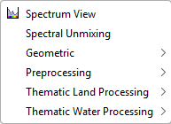
The Spectrum View component allows the user to inspect the spectra for a given pixel position.
The Spectral Unmixing tool is used to decompose a reflectance (or corrected radiance) source spectrum into a set of given endmember spectra.
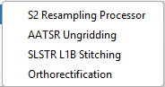
The S2Resampling operator allows the user to resample Sentinel-2 products (in SAFE or MUSCATE format) using a specific S2 resample algorithm.
The AATSR.Ungrid operator ungrids (A)ATSR L1B products and extracts geolocation and pixel field of view data.
The PduStitching operator stitches multiple SLSTR L1B product dissemination units (PDUs) of the same orbit to a single product.
The orthorectification command applies a selected map projection to a Coordinate Reference System and an orthorectification algorithm to the selected source product and creates a new target product.
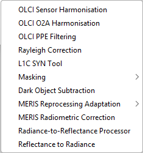
The OlciSensorHarmonisation operator performs sensor harmonisation on OLCI L1b product. Implements algorithm described in 'OLCI A/B Tandem Phase Analysis'.
The OlciO2aHarmonisation operator performs O2A band harmonisation on OLCI L1b product.
The PpeFiltering operator performs Prompt Particle Event (PPE) filtering on OLCI L1B.
The RayleighCorrection operator performs radiometric corrections on OLCI, MERIS L1B and S2 MSI L1C data products.
The L1CSYN operator combines Sentinel-3 OLCI and SLSTR Level-1B products to generate a Sentinel-3 Level-1C Synergy (SYN) product.
The OlciAnomalyFlagging operator adds a flagging band indicating saturated pixels and altitude data overflows.
The CloudProb operator implements the detection of clouds in a MERIS L1b product.
The DarkObjectSubtraction operator performs dark object subtraction for spectral bands in source product.
The Meris.Adapt.4To3 operator provides the adaptation of MERIS L1b products from 4th to 3rd reprocessing.
The Meris.CorrectRadiometry operator performs radiometric corrections on MERIS L1b data products.
The Rad2Refl operator provides a conversion from top-of-atmosphere radiance to top-of-atmosphere reflectance values or vice versa for MERIS, OLCI and SLSTR.
The ReflectanceToRadianceOp operator converts the Top Of Atmosphere (TOA) reflectance to radiance from a given product.
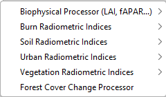
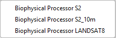
The Biophysical Processor computes Level-2B Biophysical products from Sentinel-2 or LANDSAT 8 reflectances.
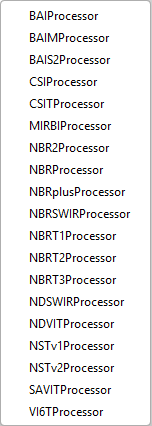
The Burn Radiometric Indices are mathematical combinations of satellite spectral bands designed to measure fire effects on the ground, such as charring, soil exposure, vegetation loss, and burn severity.
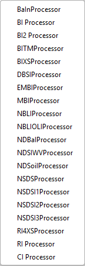
The Soil Radiometric Indices are mathematical combinations of satellite spectral bands designed to measure, map, and evaluate soil properties, moisture conditions, and land degradation.
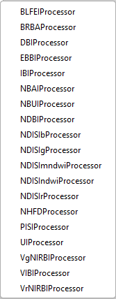
The Urban Radiometric Indices are mathematical combinations of satellite spectral bands used to identify and monitor built-up areas, urban growth, and impervious surfaces, while distinguishing urban features from natural land cover.
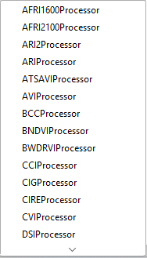
The Vegetation Radiometric Indices are mathematical combinations of satellite spectral bands used to quantify vegetation health, vigor, density, and crop conditions from satellite imagery.
The ForestCoverChangeOp processor is a multi-steps iterative process that transform two date images into one forest change product.
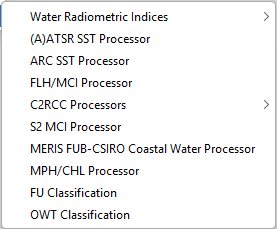
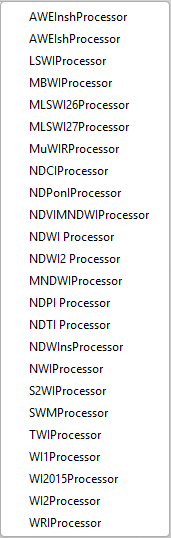
The Water Radiometric Indices are mathematical combinations of satellite spectral bands used to detect, map, and monitor surface water bodies, moisture conditions, water quality, and flood extent.
The Aatsr.SST operator enables the user to calculate the sea-surface temperature from (A)ATSR brightness temperatures.
The Arc.SST operator computes sea surface temperature (SST) and Saharan Dust Index from (A)ATSR and SLSTR brightness temperatures.
The FlhMci operator generates florescence line height (FLH) / maximum chlorophyll index (MCI) from spectral bands..
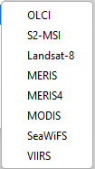
C2RCC is a processor for atmospheric correction and retrieval of water constituents from optical satellite imagery acquired by a variety of sensors.
The Mci.s2 operator generates the Maximum Chlorophyll Index (MCI) by exploiting the height of a measurement over a specific baseline.
The FUB.Water operator makes use of MERIS Level-1b TOA radiances in the bands 1-7, 9-10 and 12-14 to retrieve the following case II water properties and atmospheric properties above case II waters.
The MphChl operator .
The FuClassification operator is used to derive the hue angle and FU (Forel-Ule) value from OLCI, SeaWiFS, MODIS and other sensors.
The OWTClassification operator performs an Optical Water Type classification based on atmospherically corrected reflectances.